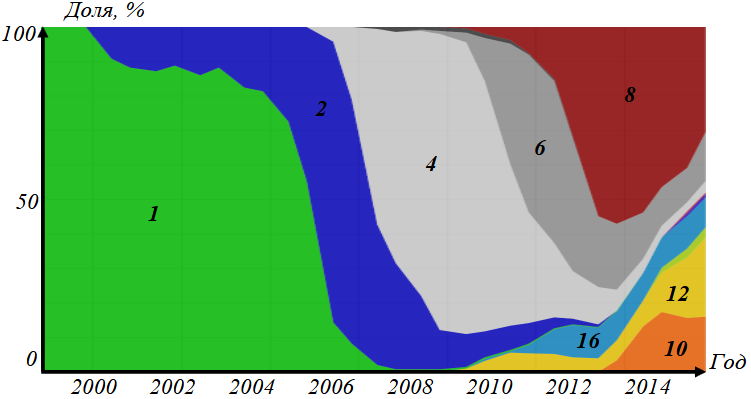

Параллельные вычисления
Введение
Параллельные вычисления – вычисления, которые можно реализовать на многопроцессорных системах с использованием возможности одновременного выполнения многих действий, порождаемых процессом решения одной или многих задач [одного проекта].
Основная цель параллельных вычислений – уменьшение времени решения задачи. Многие необходимые для нужд практики задачи требуется решать в реальном времени или для их решения требуется очень большой объем вычислений. Отметим, что увеличение числа процессоров не обязательно приводит уменьшению времени решения задачи.
Использование параллельной обработки данных – не единственный путь увеличить скорость вычислений. Другой подход – увеличивать мощность процессорных устройств. Ограничениями такого подхода являются:
- Ограниченность скорости переключения
- Ограниченность размеров компонентов устройства
- Экономические ограничения
История развития параллельных вычислений
Основные этапы в истории развития параллельных вычислений:- 1963 год - появление первого в мире суперкомпьютера CDC6600 с одним центральным процессором
- 1972 год - прекращение разработки суперкомпьютера CDC8600, который проектировался для использования четырех процессоров с общей памятью
- 1980 год - появление первого отечественного многопроцессорного компьютера Эльбрус-1
- 1983 год - появление превосходящего все известные аналоги суперкомпьютера Cray X-MP, в котором использовалось два центральных процессора
- 1994 год - компания ASUS выпустила свою первую материнскую плату с двумя сокетами, что позволило распространять настольные многопроцессорные компьютеры
- 2001 год - появление первого многоядерного процессора массового использования POWER4, выпущенного фирмой IBM
- 2005 год - компании AMD и Intel выпускают свои первые двухъядерные процессоры
На рисунке показано, какую долю занимали процессоры с разным количеством ядер при создании суперкомпьютеров в разное время. Закрашенные области помечены цифрами 1, 2, 4, 6, 8, 10, 12, 16 для обозначения количества ядер. Ширина области по вертикали равна относительной частоте использования процессоров соответствующего типа в рассматриваемом году.
Задачи параллельных вычислений
Задача параллельных вычислений – создание ресурса параллелизма (получение параллельного алгоритма) в процессах решения задач и управление реализацией этого параллелизма с целью достижения наибольшей эффективности использования многопроцессорной вычислительной техники.
| Этап | Последовательная система | Параллельная система |
|---|---|---|
| Постановка задачи | Определение проблемы | |
| Определение целей | ||
| Описание условий | ||
| Согласование задачи | ||
| Создание математической модели | Формулирование модели | |
| Определение параметров и переменных | ||
| Разработка уравнений и ограничений | ||
| Проверка и валидация модели | ||
| Разработка алгоритма | Определение логики решения задачи | |
| Разработка схемы алгоритма | ||
| Оптимизация алгоритма | ||
| Тестирование алгоритма | ||
| Декомпозиция алгоритма | Этап отсутствует | Выделение независимых действий |
| Декомпозиция по данным или вычислениям | ||
| Оценка возможности декомпозиции | ||
| Подготовка алгоритма к параллельному выполнению | ||
| Назначение работ | Этап отсутствует | Определение числа исполнителей |
| Распределение подзадач | ||
| Балансировка нагрузки | ||
| Минимизация обменов данными | ||
| Выбор типа распределения | ||
| Дирижирование | Этап отсутствует | Выбор программной модели |
| Определение синхронизации | ||
| Организация взаимодействия | ||
| Контроль и управление | ||
| Написание программы | Реализация алгоритма в одной из выбранных моделей программирования и на выбранном алгоритмическом языке | |
| Отображение | Этап отсутствует | Назначение физических устройств |
| Оптимизация распределения | ||
| Учет аппаратных особенностей | ||
| Поддержка различных моделей программирования | ||
| Работа программы | Совокупность набора процессов и нитей исполнения на вычислительной системе и получения результатов | |
|
Под последовательной системой подразумевается
машина, имеющая один процессор и одно ядро. Под параллельной - несколько процессоров и/или ядер |
||
Классификация компьютерных систем
Существуют различные классификации, преследующие разные цели. При разработке параллельного алгоритма наиболее важно знать тип оперативной памяти, т.к. она определяет способ взаимодействия между частями параллельной программы. В зависимости от организации подсистем оперативной памяти параллельные компьютеры можно разделить на следующие два класса:
- Системы с разделяемой памятью (мультипроцессоры), у которых имеется одна виртуальная память, а все процессоры имеют одинаковый доступ к данным и командам, хранящимся в этой памяти (uniform memory access или UMA). По этому принципу строятся векторные параллельные процессоры и симметричные мультипроцессоры.
- Системы с распределенной памятью (мультикомпьютеры), у которых каждый процессор имеет свою локальную оперативную память, а у других процессоров доступ к этой памяти отсутствует.
Исторически наиболее ранней является классификация М. Флинна (1966). Классификация основана на понятии потока, под которым понимается последовательность команд или данных, обрабатываемых процессором. На основе числа потоков команд и потоков данных выделяют четыре класса архитектур:
- SISD (Single Instruction stream/Single Data stream) - один поток команд и один поток данных
- SIMD (Single Instruction stream/Multiple Data stream) - один поток команд и множество потоков данных
- MISD (Multiple Instruction stream/Single Data stream) - множество потоков команд и один поток данных
-
MIMD (Multiple Instruction stream/Multiple Data stream) -
множество потоков команд и множество потоков данных,
которые имеют следующие основные подклассы:
- Векторно-конвейерные компьютеры, в которых используется набор векторных команд, обеспечивающих выполнение операций с массивами независимых данных за один такт
- Массово-параллельные (чаще называемые также массивно- параллельные) компьютеры с распределенной памятью
- Симметричные мультипроцессоры (SMP) состоят из совокупности процессоров, имеющих разделяемую общую память с единым адресным пространством и функционирующих под управлением одной операционной системы
- Кластеры образуются из вычислительных модулей любого из рассмотренных выше типов, объединенных системой связи или посредством разделяемой внешней памяти